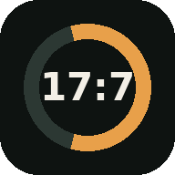

En jeûne
Ouverture du créneau dans
--:--:--

FitFast
En jeûne
Ouverture du créneau dans
--:--:--
Oui si tu n’as rien mangé ni bu de calorique hors du créneau (bière comprise).
0 L
Bière
y compris en fin de service
Grignotage
hors repas
Autre
sucré, alcool, etc.
Nombre
Enregistrement automatique
Série de jeûnes respectés
0
jour
Indique ton poids dans le journal ou les réglages pour voir la courbe.
Par défaut 11h30–18h30, tous les jours. Tu t’arrêtes de manger vers l’heure de début du jeûne ci-dessous.
Sur Android, une appli web (PWA) ne peut pas réveiller le téléphone de façon fiable une fois fermée : Chrome n’envoie pas les notifications programmées à l’heure dite.
Quand FitFast est ouvert (ou laissé au premier plan), les rappels fonctionnent. Pour être sûr de les recevoir même l’appli fermée, ajoute-les dans Google Agenda (fichier ci-dessous) ou dans l’Horloge Samsung.
Ouvre le fichier avec Google Agenda, puis ajoute tous les événements. Vérifie que les notifications de l’agenda sont activées sur le téléphone.
Tes données restent sur ce téléphone. Exporte une copie de temps en temps.
FitFast — jeûne 17:7. Aucune donnée n’est envoyée sur internet.